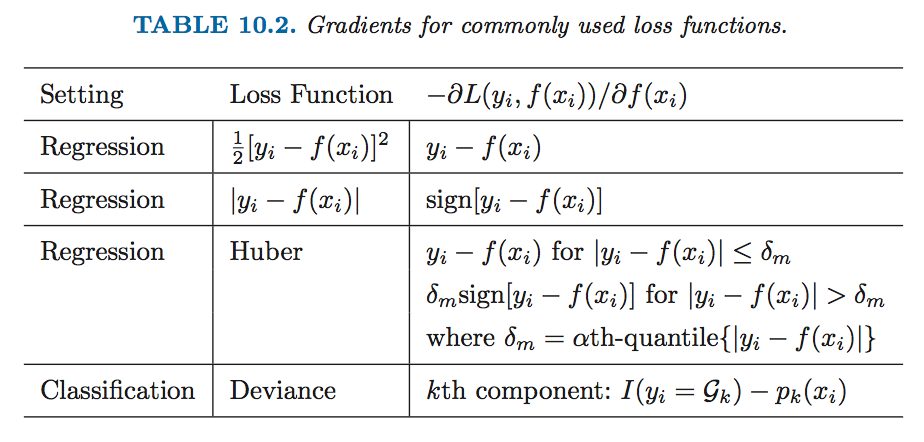
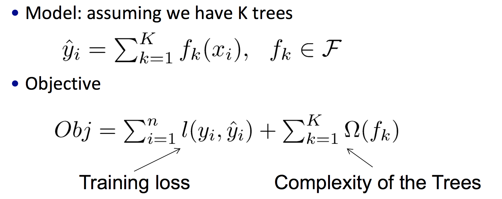
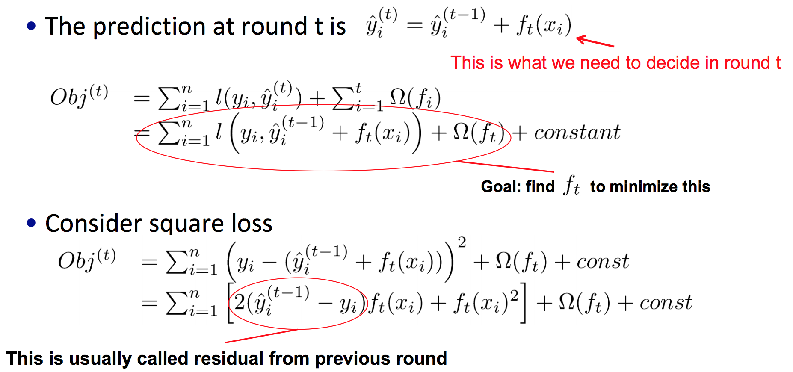
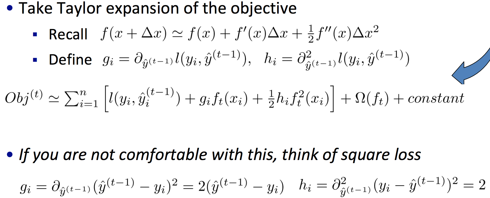
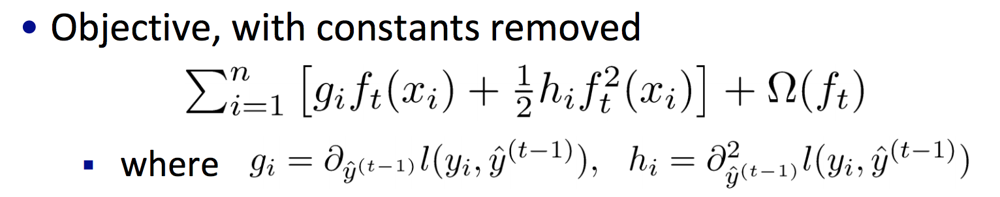
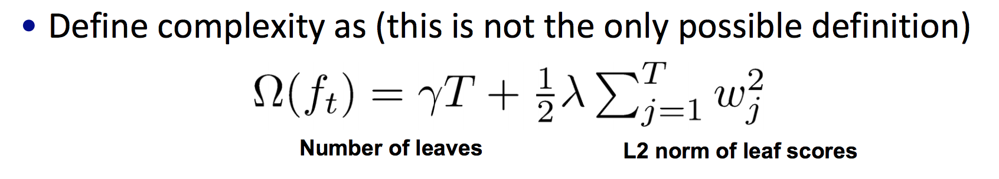
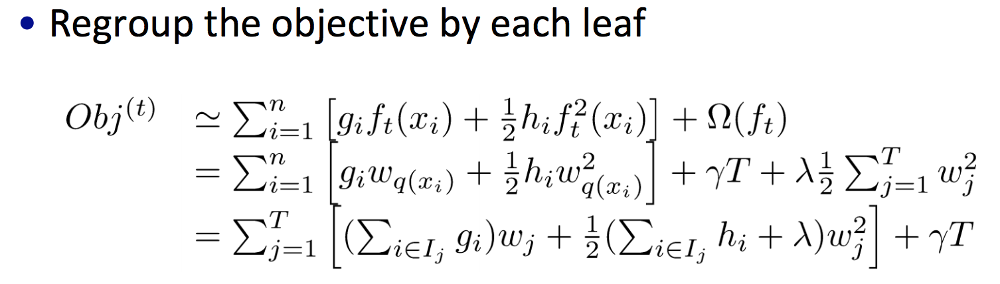
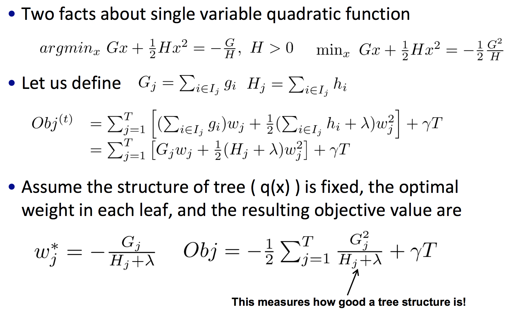
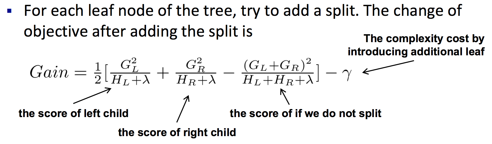
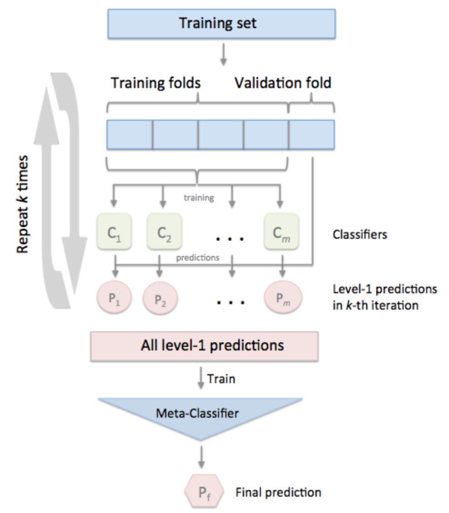

集成学习¶
集成学习的目的,就是把一些个体基学习器按照某种策略融合到一起,形成一个比每个单一基学习器效果都要好的融合模型。
Bagging¶
给定包含m个样本的数据集,有放回地进行抽样,每次得到一个含m个样本的子集(初始训练集中有63.2%的样本出现在该子集中)。如此进行T次操作,即可得到T个含m个样本的采样集。基于每个采样集训练出一个基学习器,再将它们结合:分类问题可以采用简单投票法,回归问题可以采用简单平均法。
Random Forest¶
随机森林是最典型的Bagging扩展体之一。其基分类器为决策树,除了对样本进行有放回的抽取之外,每次还会随机选择k个属性进行训练,最后对结果进行结合。
随机森林的每个基分类采用的是部分属性和部分样本进行训练,因此每棵基树都会学的很深,然后再结合。这样的策略与boosting有很大的区别。
Boosting¶
首先从初始训练集训练出一个基学习器,再根据分类结果对样本进行权重调整,被错误分类的样本会得到较高的权重,受到更多的关注,形成新的样本进行下一轮的训练,直到指定的T轮。最终将这T个基学习器加权结合。
相比与Bagging,Boosting更关注于降低偏差。所以每个基分类都不会训练得太深,而是采取多次迭代提升的策略,来防止过拟合。
提升方法最常见的使用场景时在决策树上。
Adaboost¶
设训练数据集 \(T={(x_1,y_1),(x_1,y_1),\cdots ,(x_N,y_N)}\), \(y_i\in \{-1,1\}\)
- 分类
- 初始化训练数据的权值分布
- 使用具有权值分布 \(D_m\) 的训练数据集学习,得到基分类器 \(G_m(x)\)
- 计算 \(G_m(x)\) 在训练集上的分类误差率
- 计算 \(G_m(x)\) 的系数
- 更新训练集的权值分布
其中 \(Z_m\) 是规范化因子
- 构建基本分类器的线性组合
得到最终分类器
- 回归
区别于分类问题,在回归问题上,则是拟合当前模型与目标之间的残差。总之,取决于损失函数的定义。
当Adaboost的基分类器为决策树时,则被称为 提升树 。此时一般采用CART作为基分类器,所以是二叉树。
提升树一般会通过调整learning rate来防止过拟合。
GBDT¶
GBDT,即梯度提升树,则是利用当前模型损失函数的负梯度值,作为残差的近似值去拟合:
加上学习率:
常用的损失函数如下表:
{kind=link}
由上表可以看出,在回归问题上采用误差平方和作为损失函数,其负梯度值即为残差,而在分类问题上一般会映射成概率,其常用的损失函数为:
在正则化上,除了学习率外,GBDT还可以在每次提升时采用随机无放回的样本采样(行采样)方式,即用随即梯度下降的方式来提高泛化能力。
XGBoost¶
与GBDT不同处在于,XGBoost在目标函数中添加了正则项:
{kind=link}
对于误差损失的部分,XGBoost对损失函数进行了一个泰勒二阶展开:
{kind=link}
注:其中 \(\widehat{y}_i^{(t)},\ y_i\) 都是常数，一些常数项都被加到了 \(const\) 里:
{kind=link}
此时,目标函数就可转化成:
{kind=link}
对于当前树的正则部分,包含了叶结点个数,以及对预测值做了平滑处理,防止过拟合:
{kind=link}
重新定义目标函数,将目标函数整理到每个叶当中:
{kind=link}
通过转换可以得到最小目标函数:
{kind=link}
将特征值排序,遍历每个特征值,寻找最优切分点,是的损失函数的降低增益最大:
{kind=link}
XGBoost的亮点主要有:
- 目标函数中增加了正则项,考虑了叶结点数量和分值平滑的因素;
- 对损失函数进行了泰勒二阶展开,相比GBDT中的一阶导数,多了残差的二阶导数,准确度有所提升;
- 支持列抽样;
- 支持并行计算。
LightGBM¶
LightGBM相较于XGBoost,在各方面又有了提升:
- LightGBM在寻找切分点时,对连续的特征值采用了基于直方图的算法,即将连续值离散化。这样的算法相较于XGBoost的预先计算存储,速度更快,也减少了内存的消耗;
- 传统的决策树采用的是level_wise的方式增长,这样往往会分裂一些不必要的结点:

而leaf_wise只对最值得分裂的结点做切分,在准确度上也有所提升:

- LightGBM在并行计算上也进行了各项优化。
总之,个人使用后的感受是,准确度与XGBoost差不多,但是速度要快不少。
Stacking¶
多基分类器的结合策略,在分类问题上常用简单投票法,回归问题常用平均法,也可以根据使用场景进行加权。还有一种常用的学习法叫 Stacking ,它是以每个基分类器的预测值作为样本,进行再次学习(如用逻辑回归..)。Stacking在使用时往往配合交叉验证。
{kind=link}
假设用 \(m\) 个分类器 \(C_m\) 对数据集(n个样本)进行 \(k\) 折交叉堆叠:
- 每次的交叉验证都是用 \(C_m\) 对当前训练集拟合,对验证集的预测值作为输出,可以得到 \(m\) 列, \(\frac{n}{k}\) 行的结果集;
- 如此进行 \(k\) 轮训练,将结果纵向堆叠,即可得到一个 \(m\) 列, \(n\) 行的结果集;
- 将该结果集作为样本,用一个Meta-Classifer预测,得到最终结果。
使用Stacking最理想的方式是使用m个相互独立,各有所长,且准确度差异不大的基分类器:使用类似的模型进行堆叠,没有太大效果;而分类器差异大,效果往往还不如最好的那个基分类器。